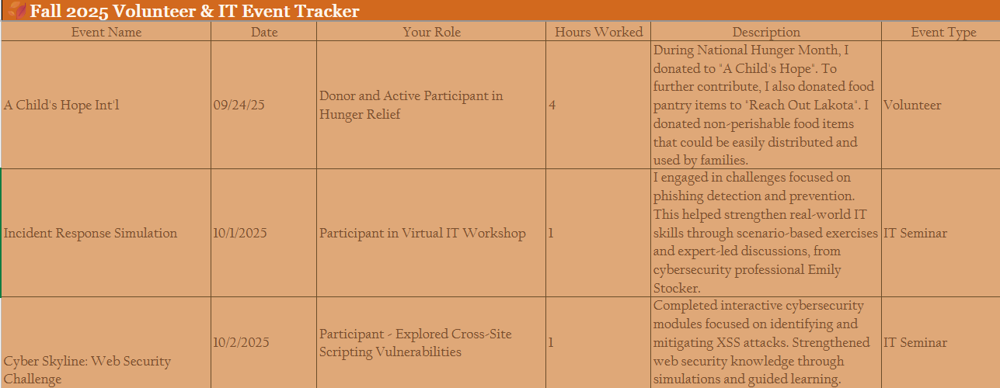
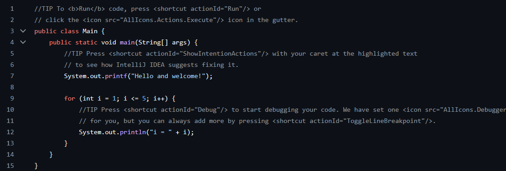
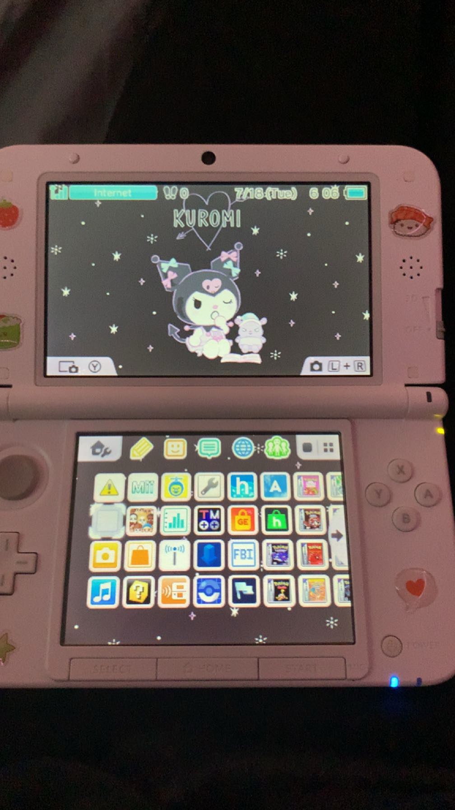

Where technical learning meets creativity and clarity.

A tool designed to help students move beyond surface-level summaries and write meaningful service reflections. It guides users to explore values and lessons learned, inspired by my work with EPIC House and campus events. This project blends technical design (form inputs and outputs) with thoughtful structure, showing how technology can support clarity and empathy.
Future vision: evolving into a web app where students generate polished essays for portfolios or scholarships.

A collection of console-based tools and object-oriented experiments that demonstrate my backend logic, file handling, and structured problem-solving skills. These projects reflect my growth in programming fundamentals and my comfort with GitHub as a collaborative platform. Visitors can see not just finished code, but my learning process and adaptability.
Future vision: expanding into GUI-based Java apps or API integrations, progressing from console tools to user-friendly applications.

A personal tech project where I customized my handheld console through hardware mods, custom firmware, and aesthetic personalization. This project reflects my curiosity for exploring systems outside formal coursework, troubleshooting complex setups, and blending creativity with technical skill.
Future vision: documenting the process in a tutorial or photo gallery, turning it into a resource for others who want to explore safe, ethical modding.
| Protocol | Port | TCP/UDP | Description |
|---|---|---|---|
| FTP | 20/21 | TCP | File Transfer Protocol |
| DNS | 53 | UDP | Domain Name System |
| HTTPS | 443 | TCP | Secure Web Traffic |
| DHCP | 67/68 | UDP | Dynamic Host Configuration Protocol |
| TFTP | 69 | UDP | Trivial File Transfer Protocol |
Here’s a lo-fi playlist I use while studying: